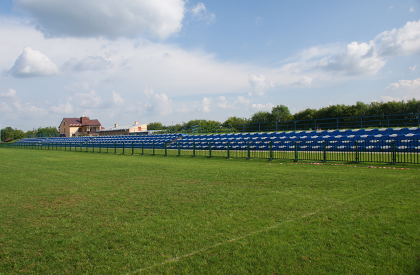

Sokołów Małopolski
Tradycja i nowoczesność
Mały przewodnik
Sokołów Małopolski miasteczko gdzię możesz zobaczyć wiele zabytków jak i poznać wiele ciekawych miejsc.
Cały układ urbanistyczny starego Sokołowa z urokliwymi uliczkami o różnorodnej zabudowie został wpisany do Rejestru Zabytków. Dlatego zwiedzanie warto zacząć od tego miejsca.
Będąc w Sokołowie warto zobaczyć magistrat- siedzibę władz gminy.
Dalej możemy wejść do parku, to serce Sokołowa, na środku zobaczyć można Pomnik Wdzięczności za Odzyskaną Wolność.
Sokołów to dawne miasto żydowskie, nieopodal rynku znajduję się Miejsko-gminny Ośrodek Kultury Sportu i Rekreacji, który dawniej pełnił funkcję Żydowskiej synagogii.
Ślady Żydów w Sokołowie Możemy też odnaleźc w wielu miejscach, jednym z nich jest Cmentarz Żydowski z 300 nagrobkami z XVII-XX wieku.
Warto obejrzeć też kościół parafialny wybudowany w stylu neogotyckim w latach 1906-1918 projektu Jana Sas Zubrzyskiego, którego hełm wyniosłej wieży projektował prof. Wiktor Zin.
W miasteczku znajduje się drugi filialny kościół Św. Ducha wybudowany w II połowie XIX wieku.
Na obrzeżach Sokołowa znajduje się wiele bardzo interesujących XVIII-to wiecznych krzyży i figur.
W mieście znajdują się dwie szkoły jedna to szkoła w której mieści się szkoła podstawowa i gimnazjum, a druga to szkoła średnia składająca się z liceum i technikum.
Od kilku lat w Sokołowie funkcjonuje najnowocześniejsza na Podkarpaciu kryta pływalnia. Jest ona miejscem relaksu nie tylko dla miejscowych ale także dla przyjezdnych gości.
W mieście funkcjonuje kilka boisk sportowych. Największym jest Stadion przy ul. Polnej gdzie mecze rozgrywa miejscowa drużyna TG Sokół Sokołów Młp.